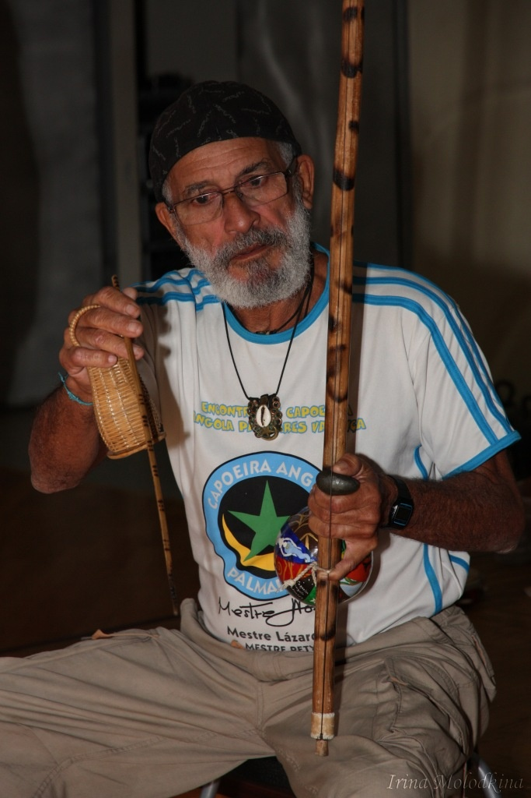
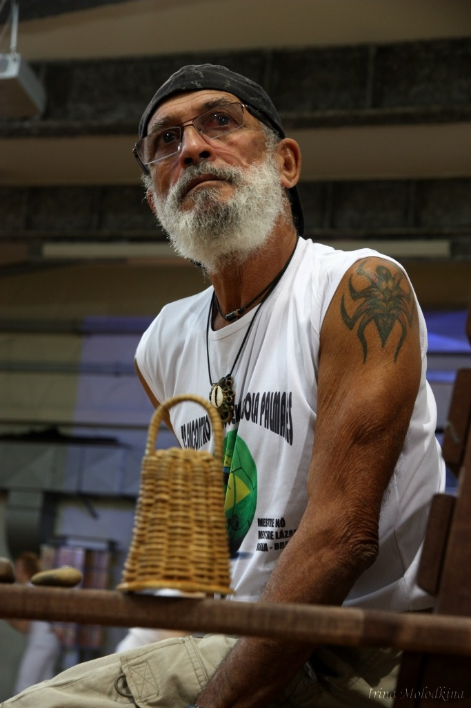
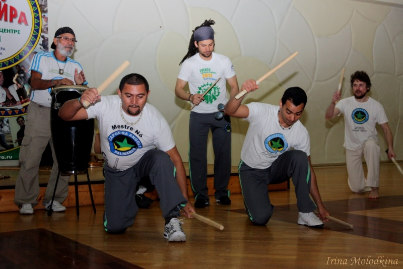

Семинар с Местре Но (август 2011)
Мештре Но с самого начала показался мне весьма необычным человеком… Комплекс ощущений, который я получил от него в первый день семинара был очень сложный и очень интригующий. То, что мне сразу бросилось в глаза — это то, как Мештре Но использует энергию группы. Я не зря прибег к такому околоэзотерическому термину. Дело в том, что любая группа людей самоорганизуется. В определенные промежутки времени в группе начинают происходить процессы, одинаковые для всех групп числом менее 50 человек. На основе этих закономерностей даже построены некоторые психологические тренинги. Но сейчас не об этом. Дело в том, что перед наступлением каждого нового процесса группа как бы «назревает». Энергия в группе копится, достигает „критической массы“ и начинается некий процесс. Мештре Но обладает удивительной способностью чувствовать эти процессы «назревания». По роду своей профессии я могу ощущать такие «назревания», и то, как тонко Мештре Но управлял ими на семинаре, вызвало у меня глубокое уважение. Было очень приятно чувствовать ту гармонию, с которой Мештре Но вел свой семинар. Все, что он делал на семинаре, было вовремя и длилось столько, сколько было нужно для данной группы.
Однако, на этом мои приятные эмоции не закончилось. В один из моментов семинара, когда мы образовали роду, я оказался неподалеку от Мештре Но и, не напрягаясь ни единым своим сенсором, я ощутил такую мощную энергетику, исходившую от Мештре, что происходящее в роде для меня невольно утратило важность. Я был поглощен этим ощущением, больше похожим на вихревые потоки, или гудящие электрические провода. Одним словом, меня чуть не сдуло. Именно тогда у меня родилась мысль о том, что есть особые люди, которые по-особому используют энергию роды. „Кажется, Мештре манджингейро“, подумалось мне тогда.
И в скором времени выяснилось, что Мештре и в самом деле манджингейро. Он сам это сказал, указав на висящий на шее патуа и прокомментировав некоторые процессы семинара с энергетической точки зрения. Мне очень понравилась манера Мештре Но изъясняться в терминах «движения энергии». Многое стало становиться на свои места, когда для меня начал приоткрываться аспект магии в капоэйре.
Под магией я не имею ввиду размахивание волшебной палочкой (и схожими по своим свойствам атрибутами), чтение заклинаний (хотя, как знать…), наведение порчи, глядение в хрустальный шар, варение зелий и т.п. Для меня магия – это особое состояние сознания, души и тела, которое позволяет… претворять в жизнь много чего интересного.
Я искренне не считаю капоэйру спортом. Я считаю капоэйру видом искусства, очень тесно связанного с древними традициями, которые в свою очередь очень тесно связаны с религией и магией. И я искренне считаю, что тот, кто хочет достичь успеха в капоэйре должен как минимум принимать и уважать эти традиции. Ну а в хорошем варианте – следовать им.
Как говорил Мештре Cobrinha Verde: Хороший капоэрист — это маг. Он должен владеть силой заклинаний и использовать защитные амулеты, потому что капоэйра не спасает нас от пуль.
Поскольку по моему скромному мнению в капоэйре магия самая что ни на есть боевая, а всякая боевая магия (по моему скромному мнению, опять же…) начинается с защиты. Потому что, только имея хорошо защищенное тело и сознание, можно ввязываться в игру, ибо никогда не известно, что преподнесет каждая новая игра, кем будет оппонент.
Говоря о защите я снова возвращаюсь к семинару с Мештре Но. После того, как выяснилось, что он маджингейро, я стал еще более внимателен к тому, что он говорит, что он делает и как выглядит, ибо аспект магии в капоэйре меня крайне интересует. Это связано с моим мировоззрением, однако, сейчас не об этом. Я заметил, что на всех фотографиях, на всех видеозаписях Мештре всегда в головном уборе. Либо это бейсболка, либо бандана, либо шапка, но голова Мештре всегда закрыта.

По правде говоря, играть в головном уборе просто удобнее. Это я прочувствовал на своем опыте. Голова не пачкается при ау ди кабеса, волосы не мешают, если они длинные, а так же не выдираются из головы при различных движениях. Да и потом это может быть просто фишкой игрока. «Однако, Мештре Но закрывает голову не спроста», подумал я и начал строить предположения, основываясь на своем магическо-эзотерическом опыте.Голова — одно из самых важный мест тела человека, это и так понятно. Однако, в различных мистических учениях существуют строгие указания насчет того, что давать трогать свою голову малознакомым людям неприемлемо. Некоторые гипнотерапевты используют наложение рук на макушку головы клиента, чтобы погрузить его в глубокий транс. Таким образом, голову всегда следует защищать от прикосновений случайных или намеренных.
И вот Мештре Но, когда объяснял ритуал принятия одной из шамад, сделал замечание: «не кладите руки на голову оппоненту, так вы можете забрать его энергию». После этой фразы иные комментарии относительно головных уборов были излишни.

Большое спасибо Mestre No, группа контра местре Нозиньо, контра местре Паапи, контра местре Кабеделу и Academy of Capoeira Angola Palmares!!! =)